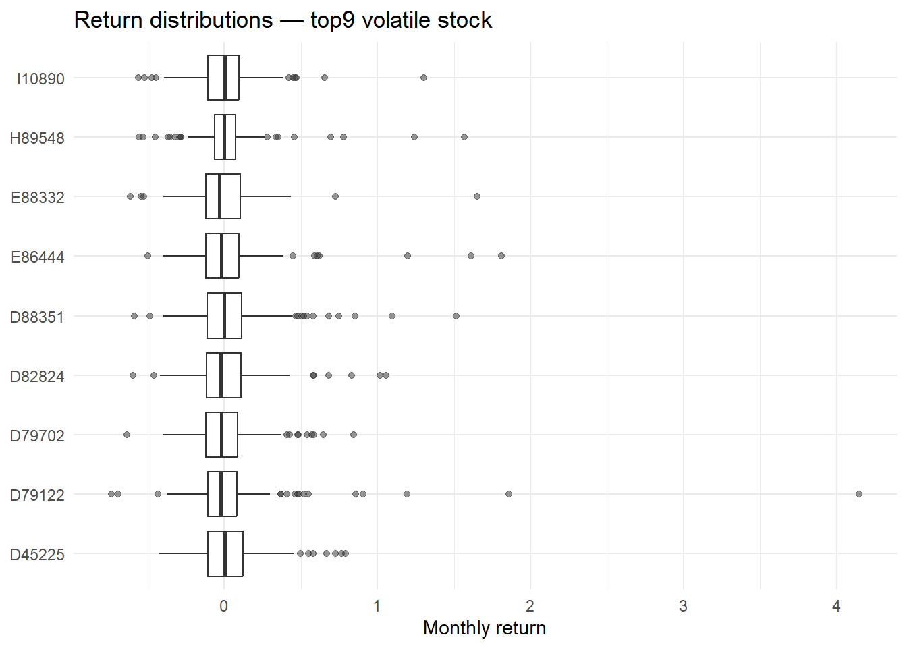
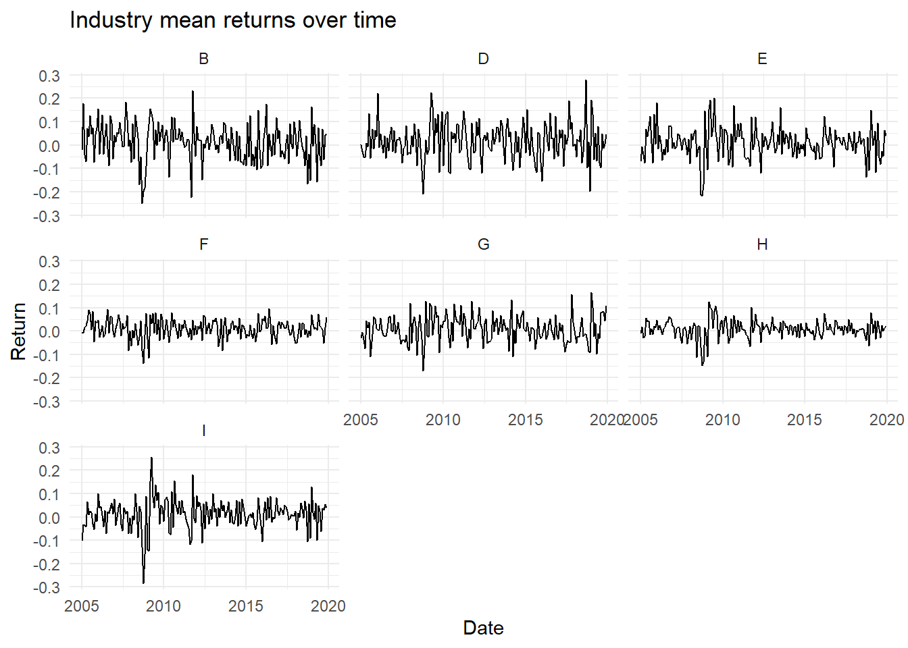
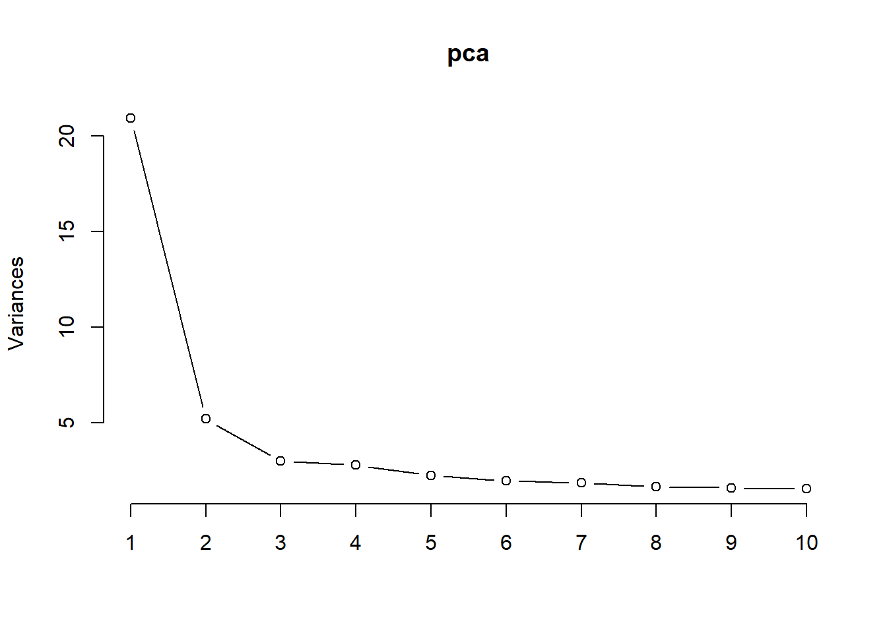
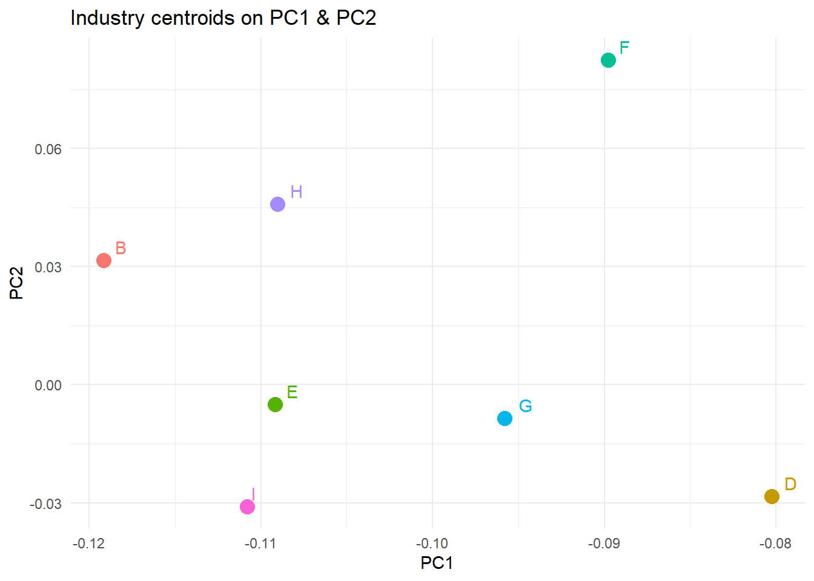
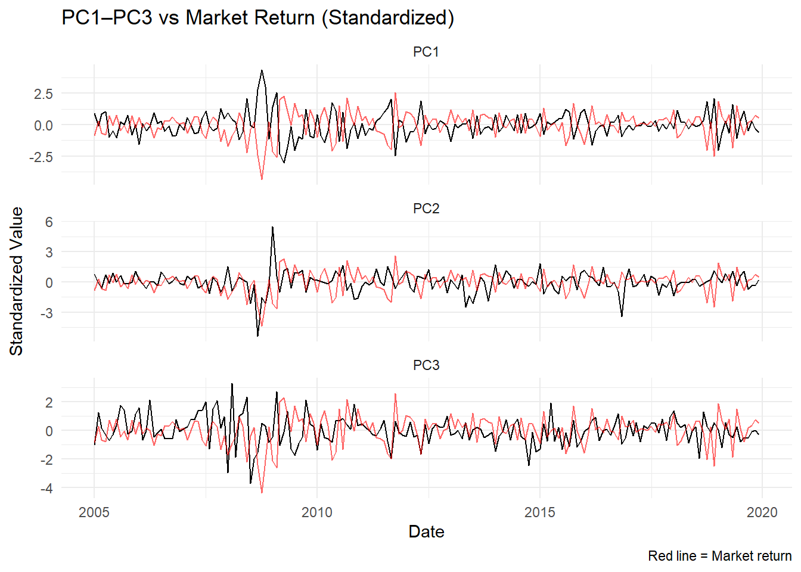
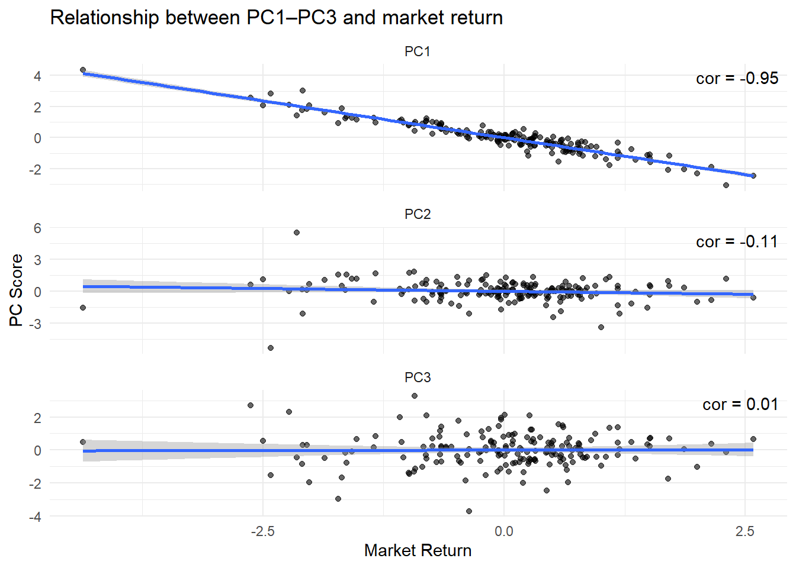
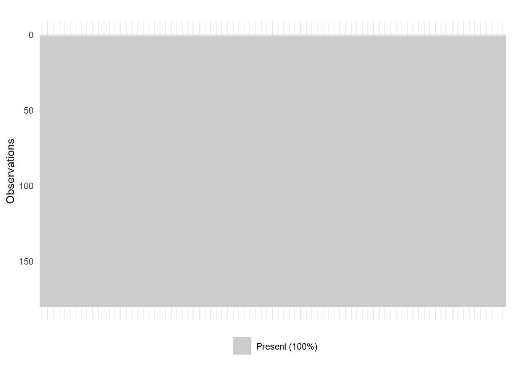
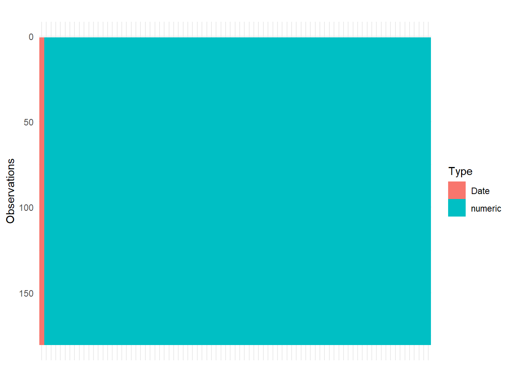

| Date | Stock | Z_Score | Return |
|---|---|---|---|
| 2018-09-01 | D79122 | 10.128081 | 4.148734 |
| 2009-04-01 | I90394 | 7.710384 | 1.011407 |
| 2005-08-01 | E88332 | 7.124317 | 1.653846 |
| 2009-08-01 | H89548 | 7.086195 | 1.569231 |
| 2009-01-01 | H89011 | 6.886952 | 0.403834 |
| 2009-01-01 | H89050 | 6.634758 | 0.314220 |
Group
Introduction
IDA and EDA
Before proceeding to high-dimensional modelling, we conducted an initial data audit and exploratory analysis to ensure the dataset is suitable for PCA, factor modelling and other analysing approaches. This involved checking data completeness, types, summary statistics, and several visualisations.
Data Quality and Formats
We have checked the data types and missingness patterns using the visdat package. The dataset contains monthly returns for various stocks, with no missing values present. Furthermore, we verified that there are no duplicate entries and there are no missing months in the time series. The data are all numerical, except for the date column.
Check for Outliers Using Z-Scores
We identify potential outliers using the 3-sigma rule. This method flags any monthly return whose z-score exceeds ±3 standard deviations from its stock’s historical mean. Z-scores were computed for each stock column individually, then reshaped and merged with the original data to inspect extreme return events.
In Table 1, we present the top 5 outliers with the highest absolute z-scores. For instance, stock D79122 recorded an extreme positive return of 4.15 on September 2018, corresponding to a z-score of 10.13. Other notable events occurred across several industries, including Finance (H89011, H89548, H89050) and Services (I90394), particularly clustered around the 2008–2009 period, which corresponds with the Global Financial Crisis.
| stock | mean | sd | min | p25 | median | p75 | max |
|---|---|---|---|---|---|---|---|
| D79122 | 0.0419732 | 0.4054826 | -0.738924 | -0.1057560 | -0.0213945 | 0.0828745 | 4.148734 |
| E86444 | 0.0186337 | 0.2732906 | -0.500000 | -0.1212192 | -0.0185450 | 0.0974352 | 1.810811 |
| D88351 | 0.0280401 | 0.2566920 | -0.586597 | -0.1136885 | -0.0031420 | 0.1128890 | 1.512882 |
| D82824 | 0.0117309 | 0.2444019 | -0.596798 | -0.1160828 | -0.0239685 | 0.1095695 | 1.057778 |
| E88332 | -0.0019823 | 0.2324192 | -0.614634 | -0.1184658 | -0.0321800 | 0.1036540 | 1.653846 |
| H89548 | 0.0180290 | 0.2189048 | -0.558025 | -0.0641698 | 0.0005695 | 0.0731190 | 1.569231 |
| D45225 | 0.0217177 | 0.2142692 | -0.424691 | -0.1087085 | 0.0025760 | 0.1228830 | 0.790123 |
| D79702 | 0.0014182 | 0.2080833 | -0.634426 | -0.1182875 | -0.0190790 | 0.0881908 | 0.845945 |
| I10890 | 0.0069911 | 0.2010341 | -0.559211 | -0.1093722 | 0.0011745 | 0.0942492 | 1.301887 |
Table 2 summarizes the top 10 most volatile stocks by standard deviation. D79122 shows the highest volatility and return, aligning with its outlier status. While most stocks have near-zero mean returns, E88332 shows high variability with a negative mean. These results reveal substantial differences in volatility, supporting the use of PCA and factor models to identify common patterns and systematic risk drivers.
Boxplot of top volatile stocks

Figure 1 presents return distributions for the top 9 most volatile stocks. While most returns are centered around zero, several stocks exhibit long right tails and extreme outliers—especially D79122, which exceeds a return of 4. These patterns confirm earlier findings and highlight the importance of using PCA and factor models to account for shared variation driven by high-volatility stocks.
Industry summary
| ind | n_stocks | mean_ret |
|---|---|---|
| B | 3 | 0.0116663 |
| D | 13 | 0.0172670 |
| E | 16 | 0.0106419 |
| F | 5 | 0.0103927 |
| G | 3 | 0.0088849 |
| H | 28 | 0.0092606 |
| I | 14 | 0.0116262 |
H is the largest industry while B and G are the smallest. Industry D has the highest mean return, while industry G has the lowest.

Industry B, D, and E have more fluctuations, while industry F and H are more stable.
| MarketReturn | B | D | E | F | G | H | I | |
|---|---|---|---|---|---|---|---|---|
| MarketReturn | 1.000 | 0.619 | 0.684 | 0.819 | 0.603 | 0.578 | 0.880 | 0.888 |
| B | 0.619 | 1.000 | 0.510 | 0.647 | 0.437 | 0.260 | 0.579 | 0.538 |
| D | 0.684 | 0.510 | 1.000 | 0.645 | 0.344 | 0.473 | 0.652 | 0.674 |
| E | 0.819 | 0.647 | 0.645 | 1.000 | 0.517 | 0.467 | 0.777 | 0.815 |
| F | 0.603 | 0.437 | 0.344 | 0.517 | 1.000 | 0.341 | 0.603 | 0.499 |
| G | 0.578 | 0.260 | 0.473 | 0.467 | 0.341 | 1.000 | 0.598 | 0.547 |
| H | 0.880 | 0.579 | 0.652 | 0.777 | 0.603 | 0.598 | 1.000 | 0.831 |
| I | 0.888 | 0.538 | 0.674 | 0.815 | 0.499 | 0.547 | 0.831 | 1.000 |
Industry I, H, and E are highly correlated with market return, and with each other. Industry G is the least correlated.
PCA

PCA is conducted after standardizing the data. 3 PCs are selected as the elbow point is at PC3 in the scree plot, in total explain 36% of total variance.

The industry centroids show that industry D (Manufacturing), G (Retail Trade) are high on PC1, industry H (Finance, Insurance and Real Estate), B (Mining) are high on PC2, and industry F (Wholesale Trade) is high on both, which is considered an outlier. Industry B (Mining) is very high on PC3. PC1 captures the largest portion of variance across all stock returns. In the context of financial data, this corresponds to the systematic risk, i.e., the component of returns that affects many stocks simultaneously and cannot be diversified away. As mentioned, industry E, H, and I are highly correlated with market return, and they all have a loading of around -0.11 for PC1, which is relatively negative compared to other industries. PC1 could then be considered slightly negatively correlated with market return, and details would be explored later. Since the PC2 are uncorrelated, industries with high importance to PC2 and PC3, industry F and B, could be considered to have unique industry variations (idiosyncratic risk).


It is clear that market is moving negatively with PC1, PC2 is slightly negative, and PC3 do not show clear coorrelation with market return. This confirms the earlier observation that PC1 is slightly negatively correlated with market return.
To summarize, industry E, H, and I are considered to contain more systematic risk, while industry F and B are considered to contain more idiosyncratic risk.
References
| PC | Variance | Proportion | Cumulative |
|---|---|---|---|
| PC1 | 20.9011 | 0.2549 | 0.2549 |
| PC2 | 5.2057 | 0.0635 | 0.3184 |
| PC3 | 3.0153 | 0.0368 | 0.3551 |
| industry | PC1 | PC2 | PC3 |
|---|---|---|---|
| B | -0.1191739 | 0.0315199 | 0.2310631 |
| D | -0.0802574 | -0.0283258 | 0.0064412 |
| E | -0.1091696 | -0.0050055 | 0.0247037 |
| F | -0.0897820 | 0.0825575 | 0.0210354 |
| G | -0.0957973 | -0.0085410 | -0.1341808 |
| H | -0.1090360 | 0.0459212 | -0.0534513 |
| I | -0.1108197 | -0.0309260 | -0.0078997 |
Appendix
Check missing values and data types

